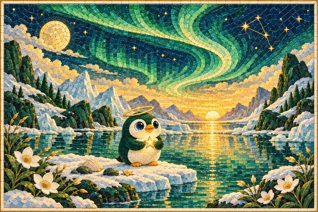
The First Light
An imagined beginning
The Founder’s Edition
One numbered painting and the Early Supporter icon for each of Nivolo’s first twenty paying members. Your supporter number matches your painting. Free trials and launch-list signups do not reserve a place.
The complete collection
Select a painting to look closer ↗
An imagined beginning
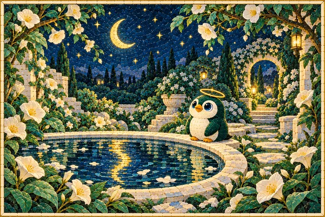
A garden after dark
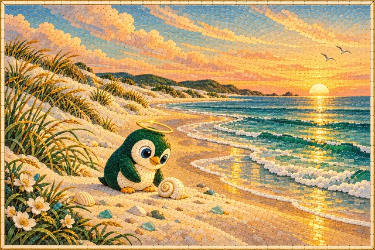
A quiet coast
Swiss Alps-inspired
A winter hideaway
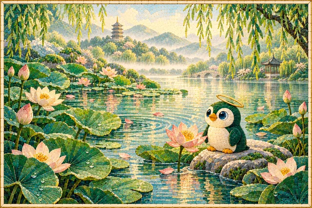
West Lake-inspired · China
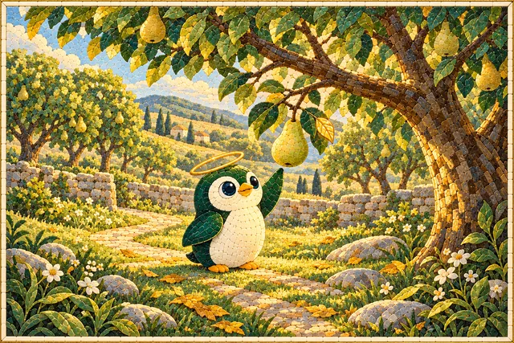
An orchard in the sunshine
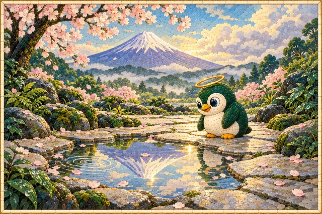
Mount Fuji-inspired · Japan
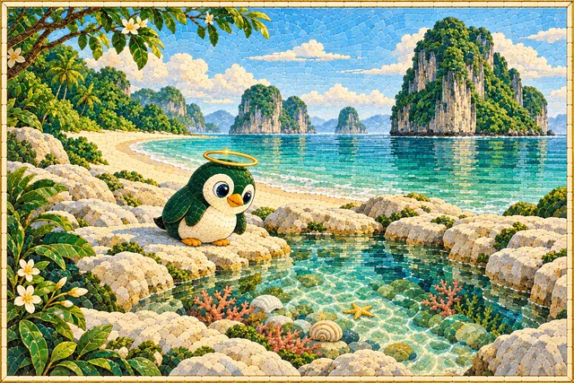
Krabi-inspired · Thailand
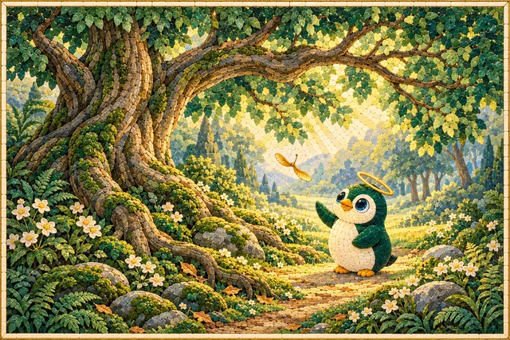
An old woodland clearing
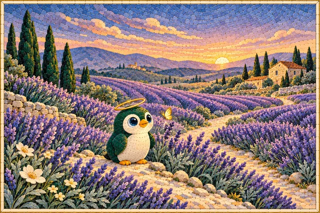
Provence-inspired · France
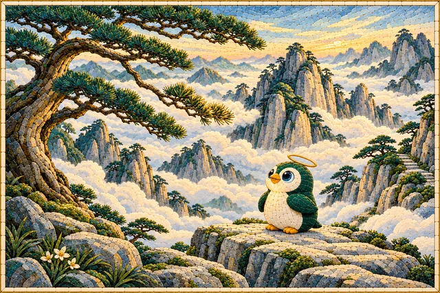
Huangshan-inspired · China
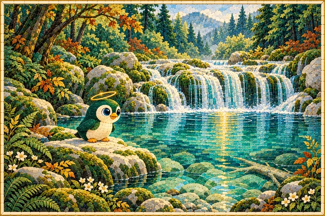
Jiuzhaigou-inspired · China
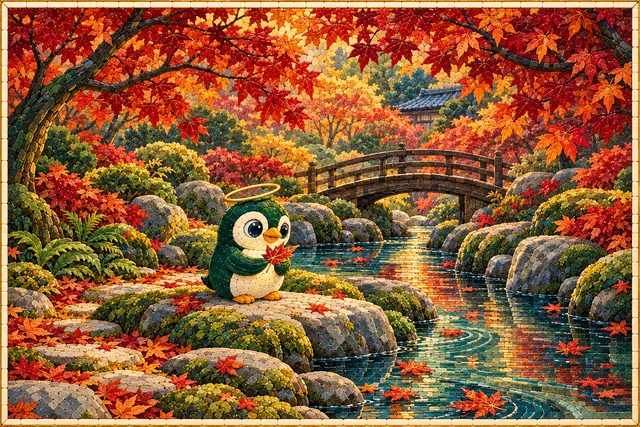
Kyoto-inspired · Japan
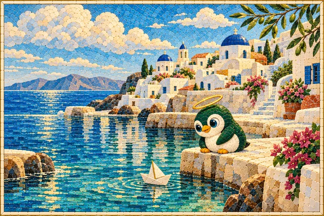
Santorini-inspired · Greece
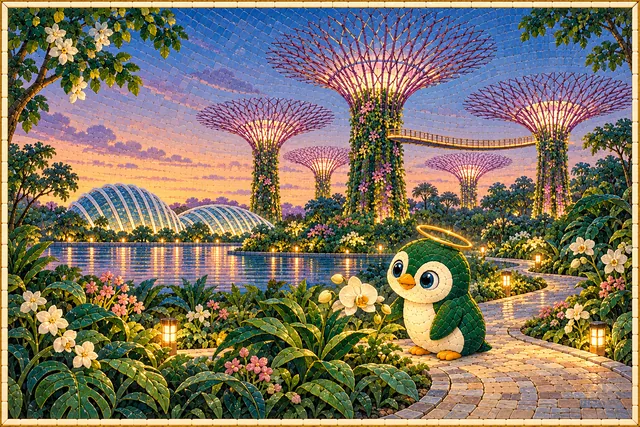
Singapore-inspired
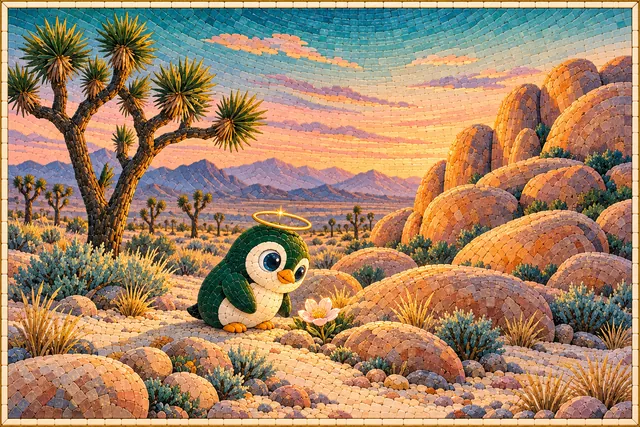
Joshua Tree-inspired · California
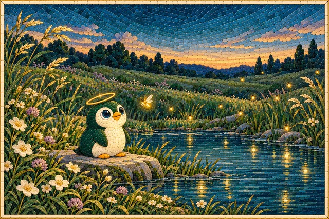
A meadow at twilight
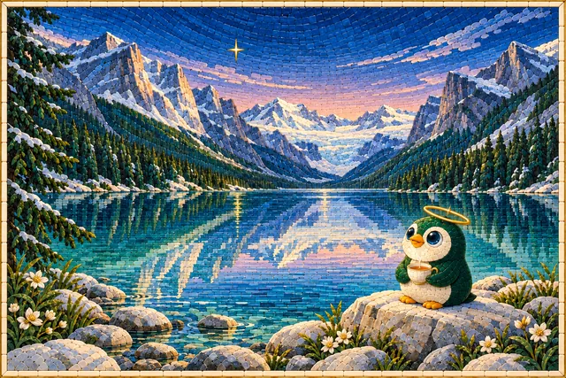
Lake Louise-inspired · Canada
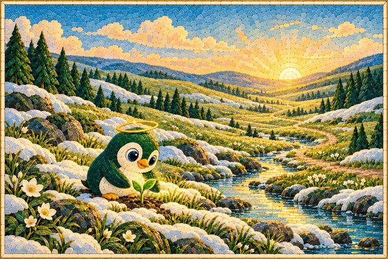
Nivo’s home valley